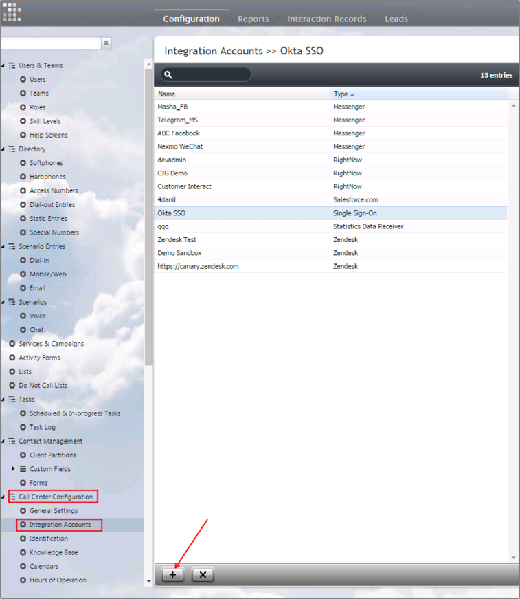
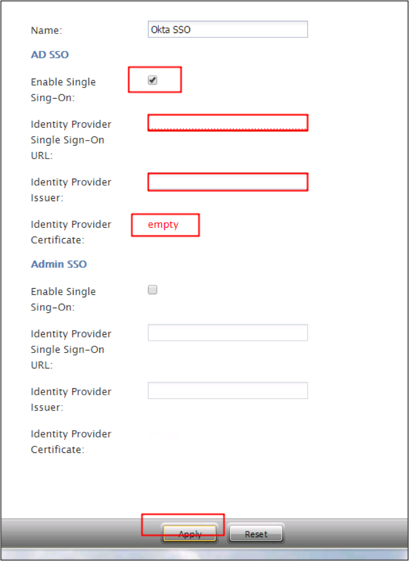
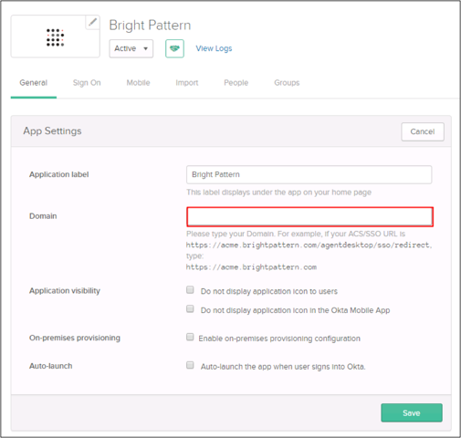

Login to the Bright Pattern Contact Center Admin interface.
Navigate to Call Center Configuration > Integration Accounts.
Click the + (plus) button.

Create a new Single Sign-On account.
Enter the following (see screen shot at end of step for reference):
Check the Enable Single Sign On box.
Identity Provider Single Sign-On URL: Copy and paste the following:
Sign into the Okta Admin Dashboard to generate this variable.
Identity Provider Issuer: Copy and paste the following:
Sign into the Okta Admin Dashboard to generate this variable.
Identity Provider Certificate: Copy and paste the following:
Sign into the Okta Admin Dashboard to generate this variable.
Click Apply.

In Okta, select the General tab for the Bright Pattern app, then click Edit.
Enter the Domain provided to you by Bright Pattern (https://[your-brightpattern-domain]) into the Domain field.
Click Save.

Done!
Notes:
IdP-initiated flows and SP-initiated flows are supported.
Just In Time (JIT) Provisioning is not supported.
Go to https://[your-brightpattern-domain].